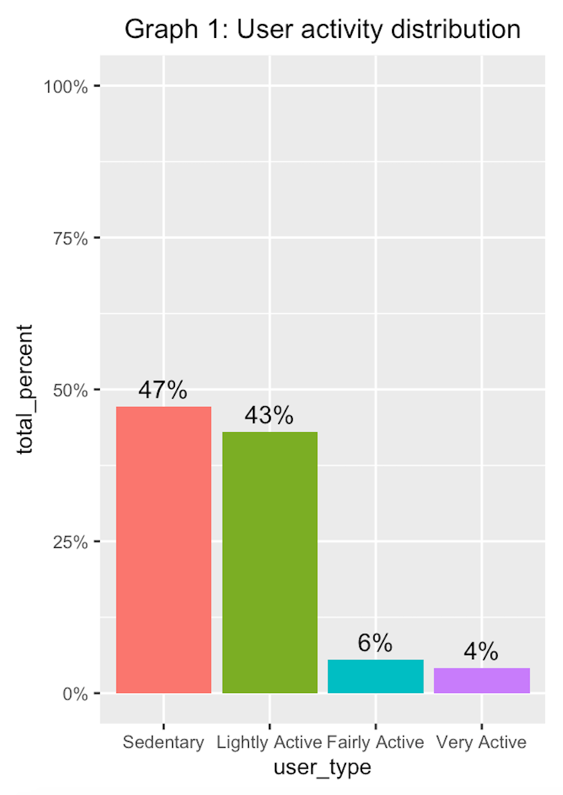
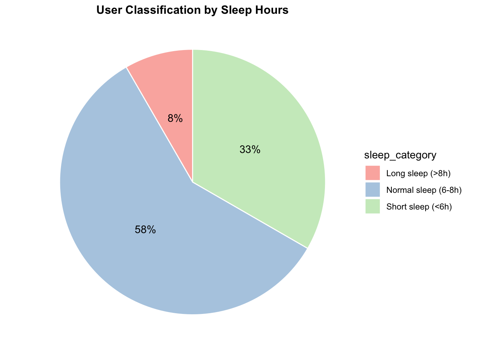
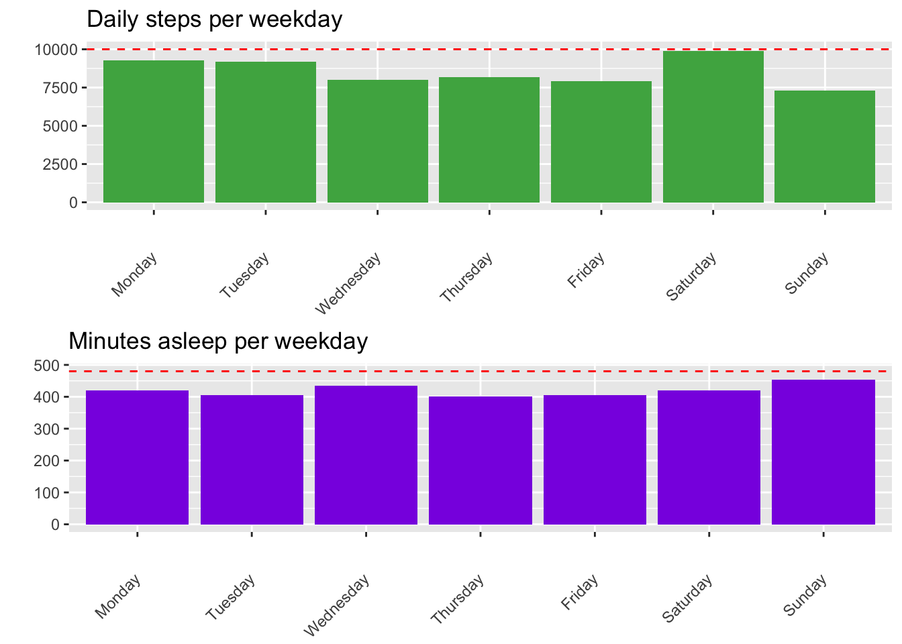
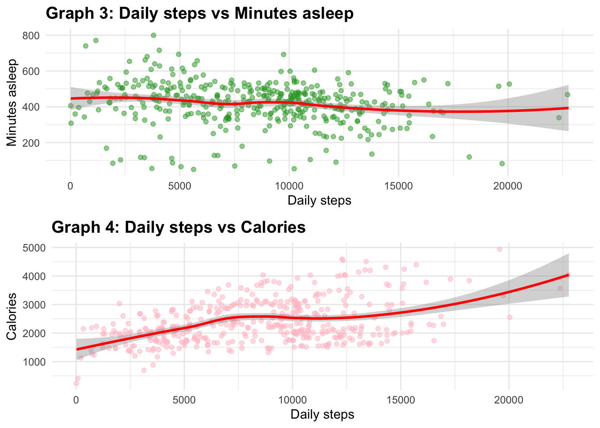

Google Case Study – Bellabeat: Wellness Smart Device Usage Analysis
L'OBJECTIF
Cette étude de cas fait partie du certificat professionnel Google Data Analytics. Bellabeat, un fabricant de produits technologiques axés sur la santé des femmes, cherche à exploiter les données de fitness des consommateurs pour débloquer des opportunités de croissance. L'objectif de cette analyse demandée par la cofondatrice Urška Sršen est d'identifier les tendances clés du comportement des utilisateurs d'objets connectés tiers (Fitbit) afin d'aider l'équipe marketing à affiner son positionnement et déployer des stratégies à l'échelle mondiale.
OUTILS
| Plateformes | RStudio, Tableau Public, Google Sheets / Microsoft Excel (Exploration initiale) |
| Codes & Langages | R (Langage d'analyse statistique) |
| Librairies & Outils | Tidyverse (dplyr, ggplot2, tidyr), janitor, patchwork, ggpubr, Analyses de corrélation |
DONNEES & LIMITES
Pour cette analyse, j'ai utilisé les données publiques "FitBit Fitness Tracker Data" générées par des répondants via Amazon Mechanical Turk. Le jeu contient deux dossiers contenant jusqu'à 18 fichiers CSV détaillant l'activité quotidienne, les calories, les pas, la fréquence cardiaque et le sommeil. Afin de fiabiliser l'analyse, je me suis concentrée sur le mois le plus complet (avril à mai 2016). Plusieurs limitations clés ont été identifiées : un échantillon restreint (33 utilisateurs pour l'activité, 24 pour le sommeil), un manque de données démographiques (âge, localisation) réduisant la portée des segments, et des écarts de taille d'échantillon entre les fichiers.
NETTOYAGE & PRÉPARATION EN R
Après une exploration initiale sur tableur pour analyser la structure large/longue des fichiers, le nettoyage a été orchestré sous R. J'ai d'abord vérifié le nombre d'identifiants uniques (33 pour l'activité, 24 pour le sommeil). J'ai identifié et supprimé 3 doublons stricts présents dans le fichier de sommeil à l'aide de distinct(). Les noms de colonnes ont été uniformisés en minuscules via le package janitor. Enfin, les dates stockées au format texte ont été converties en objets Date appropriés, permettant une fusion (merge) rigoureuse des tables d'activité et de sommeil sur les clés composites "id" et "date", créant un jeu de données final consolidé de 410 observations.
PROFILAGE & DIRECTIVES DE L'OMS
À l'aide d'agrégations conditionnelles sous R, j'ai segmenté les utilisateurs selon leur niveau d'activité et leur sommeil. Les résultats révèlent que 47 % des utilisateurs ont un profil sédentaire et 51 % affichent un volume de pas insuffisant ("Low Step"). L'analyse du sommeil montre une statistique alarmante : 33 % des utilisateurs dorment moins de 6 heures par nuit, manquant l'objectif de base. En confrontant l'activité mensuelle moyenne aux recommandations de l'OMS (150 à 300 minutes d'activité modérée par semaine), le constat est clair : les profils actifs légers et même très actifs se situent globalement bien en dessous des seuils recommandés pour préserver leur santé.


ANALYSE HEBDOMADAIRE & CORRÉLATIONS
En analysant les métriques selon les jours de la semaine, on remarque que le seuil recommandé de 10 000 pas n'est jamais atteint en moyenne, bien que le samedi s'en rapproche le plus, tandis que le dimanche marque le point le plus bas en activité. L'étude des graphiques de corrélation (nuages de points avec courbes de tendance smooth) révèle des enseignements notables : une corrélation négative inattendue apparaît entre le nombre de pas et les minutes de sommeil (les utilisateurs très actifs dorment légèrement moins). À l'inverse, on valide une corrélation positive linéaire forte et attendue entre le volume de pas/minutes d'activité intense et la dépense en calories.


TABLEAU DE BORD INTERACTIF
Créé avec Tableau, ce tableau de bord est entièrement interactif. Vous pouvez explorer dynamiquement les données, croiser les volumes de pas et de sommeil par utilisateur et découvrir mes principales recommandations de visualisation.